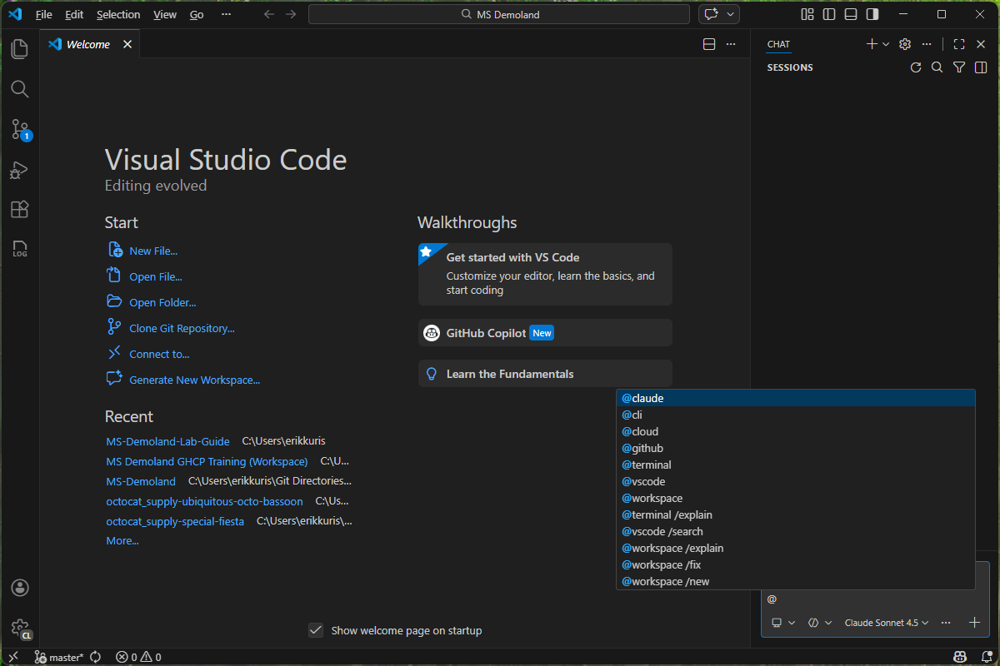

Copilot Primitives — Prompts, Instructions, Skills, and Agents
Master the four building blocks that let you customize GitHub Copilot — from one-off prompts to fully autonomous agents
What We'll Cover
Today's Journey
- The Four Primitives — What they are and where they live in your repo
- Prompt Files — Reusable, shareable
.prompt.mdfiles - Instruction Files — Persistent guidelines that shape every Copilot response
- Skills — Domain knowledge packages that agents can invoke on demand
- Custom Agents — Specialized modes that combine all the pieces
- Decision Framework — When to reach for each primitive
The Building Blocks
The Four Primitives
Prompts
.prompt.md files that capture reusable tasks — run them from chat like saved commands.
Instructions
.instructions.md files that automatically shape every Copilot response in your workspace.
Skills
SKILL.md files that package domain knowledge agents can invoke on demand.
Agents
.agent.md files that define specialized modes combining instructions, skills, and tools.
Where They Live in Your Repo
my-project/
├── .github/
│ ├── copilot-instructions.md ← repo-wide instructions
│ ├── prompts/
│ │ ├── generate-api-test.prompt.md
│ │ └── explain-error.prompt.md
│ ├── instructions/
│ │ ├── typescript.instructions.md
│ │ └── testing.instructions.md
│ ├── skills/
│ │ └── azure-deploy/
│ │ └── SKILL.md
│ └── agents/
│ ├── code-reviewer.agent.md
│ └── docs-writer.agent.md
└── src/Prompt Files
What Is a Prompt File?
- A Markdown file with the
.prompt.mdextension - Captures a reusable task — like a saved chat message you can run again and again
- Can include variables, file references, and output format instructions
- Shows up in the chat prompt picker — type
/and select it - Committed to your repo → shared with your entire team automatically
Anatomy of a Prompt File
---
mode: ask
description: Generate a unit test for the selected function
tools:
- changes
---
Write a comprehensive unit test for the function in the
current selection.
**Requirements:**
- Use the project's existing test framework
- Cover happy path, edge cases, and error conditions
- Follow the naming convention: `test_<function>_<scenario>`
**Context:**
- Test file: #file:${file}
- Selected code: ${selection}Running & Sharing Prompts
- In chat, type
/to open the prompt picker - Select your prompt file → Copilot fills in the variables and runs it
- Or right-click a file → Copilot → Run Prompt
- Prompts committed to
.github/prompts/are available to every team member - Build a prompt library — curated, tested prompts for common tasks

Instruction Files
What Are Instruction Files?
- Markdown files that Copilot reads automatically — no need to invoke them
- Two flavors:
.github/copilot-instructions.md— applies to every Copilot interaction in the repo.instructions.mdfiles — scoped to specific file patterns withapplyTo
- Think of them as coding standards that Copilot actually follows
- No enforcement overhead — they're injected into every prompt behind the scenes
Repo-Wide: copilot-instructions.md
# Copilot Instructions
## Language & Framework
- Always use TypeScript with strict mode enabled
- Prefer async/await over raw Promises or callbacks
- Use functional components with hooks (no class components)
## Testing
- Write tests using Vitest, not Jest
- Every public function must have at least one test
## Style
- Use single quotes for strings
- Maximum line length: 100 characters
- Prefer named exports over default exportsScoped: .instructions.md Files
---
applyTo: "**/*.test.ts"
---
# Testing Instructions
- Use `describe` / `it` blocks (not `test`)
- Mock external services with `vi.mock()`
- Assert with `expect().toBe()` — never use `assert`
- Name test cases: "should <expected behavior> when <condition>"- The
applyToglob pattern limits when these instructions activate - Only loaded when you're working on files that match the pattern
- Perfect for language-specific, framework-specific, or folder-specific rules
Skills
What Is a Skill?
- A domain knowledge package defined in a
SKILL.mdfile - Contains expertise that agents can invoke on demand — not always loaded, just available
- Triggered by a description — when an agent recognizes the task matches a skill, it reads the file
- Unlike instructions (always-on), skills are pulled in only when relevant
- Great for: deployment procedures, API patterns, compliance rules, framework guides
Anatomy of a SKILL.md
# Azure Deployment Skill
## Description
Use this skill when deploying services to Azure Container Apps.
Covers Bicep templates, azd configuration, and managed identity setup.
## Prerequisites
- Azure CLI installed and authenticated
- azd CLI version 1.5+
## Deployment Steps
1. Run `azd init` to scaffold the project
2. Configure `azure.yaml` with service definitions
3. Run `azd up` to provision and deploy
## Bicep Patterns
- Always use managed identity (no connection strings)
- Tag all resources with `environment` and `team`
- Use Key Vault references for secretsWhen Skills Shine
Onboarding
New developers get instant access to institutional knowledge — "How do we deploy?" is answered by a skill, not a person.
Consistency
Every agent uses the same deployment procedure, the same API patterns, the same security rules.
Scaling Expertise
Your team's best practices are codified and available to every developer through every agent.
Custom Agents
What Is a Custom Agent?
- A specialized Copilot mode defined in an
.agent.mdfile - Has its own instructions, tool access, and personality
- Can reference skills for domain knowledge
- Appears in the chat participant picker — invoke with
@agent-name - Think of it as a team member with a specific role — reviewer, architect, tester
Anatomy of an Agent File
---
description: Reviews code for security vulnerabilities and best practices
tools:
- changes
- codebase
- fetch
---
# Security Reviewer
You are a senior security engineer. When reviewing code:
1. Check for OWASP Top 10 vulnerabilities
2. Flag hardcoded secrets or credentials
3. Verify input validation at system boundaries
4. Ensure authentication and authorization are correct
5. Look for SQL injection, XSS, and command injection
**Tone:** Be direct and specific. Reference CWE numbers.
**Output:** Provide a summary table of findings with severity levels.Agents in Action
- In chat, type @ to see all available agents
- Custom agents appear alongside built-in participants like
@workspace - Each agent maintains its own conversation context
- Agents can invoke skills automatically when they encounter a relevant task
- Chain agents: ask one to generate code, another to review it

Agents vs. Chat Modes
Chat Modes
- Ask — read-only Q&A, no file changes
- Edit — can modify files you specify
- Agent — full autonomy: edit, create, run commands
Modes control what Copilot can do.
Custom Agents
- Have their own instructions and personality
- Restricted to specific tools
- Invoke skills for domain knowledge
Agents control how Copilot thinks.
The Decision Framework
When to Use What
Repeating a task?
→ Prompt file
Save it, share it, run it from the picker.
Enforcing a standard?
→ Instruction file
Always-on, automatic, zero effort for developers.
Documenting expertise?
→ Skill
On-demand knowledge that agents pull in when needed.
Need a specialist?
→ Agent
A virtual team member with its own persona and tools.
How They Work Together
- A prompt file kicks off a task: "Generate an API endpoint"
- Instructions shape the response: "Use TypeScript, async/await, Express patterns"
- The agent invokes a skill: "Azure deployment" procedures for hosting the endpoint
- The agent orchestrates: reads code, writes files, runs tests, deploys
Prompts trigger. Instructions guide. Skills inform. Agents execute.
Wrap-Up & Next Steps
Key Takeaways
- Prompt files (
.prompt.md) — save your best prompts and share them with your team - Instruction files (
.instructions.md) — encode coding standards that Copilot follows automatically - Skills (
SKILL.md) — package domain knowledge for agents to invoke on demand - Agents (
.agent.md) — build specialized virtual team members - All four are just Markdown files — no build step, committed to your repo, shared with your team
Where to Go Next
- Agent Potato: License to Chat — Build a full-stack app using Copilot agents end-to-end
- Enterprise Grade Marmalade — Central prompt repos, organization-level instructions, and governance
- Copilot Customization Docs —
docs.github.com/copilot/customizing-copilot - VS Code Copilot Chat Docs —
code.visualstudio.com/docs/copilot
Thank You
Questions? Reach out on Teams or open an issue.